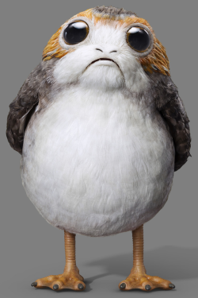

Ewoks or Porgs?

Ewoks are a fictional species of small, mammaloid bipeds that appear in the Star Wars universe. They are hunter-gatherers resembling teddy bears that inhabit the forest moon of Endor and live in various arboreal huts and other simple dwellings. Ewoks are a fictional species of small, mammaloid bipeds that appear in the Star Wars universe. They are hunter-gatherers resembling teddy bears that inhabit the forest moon of Endor and live in various arboreal huts and other simple dwellings. Ewoks are a fictional species of small, mammaloid bipeds that appear in the Star Wars universe. They are hunter-gatherers resembling teddy bears that inhabit the forest moon of Endor and live in various arboreal huts and other simple dwellings. Ewoks are a fictional species of small, mammaloid bipeds that appear in the Star Wars universe. They are hunter-gatherers resembling teddy bears that inhabit the forest moon of Endor and live in various arboreal huts and other simple dwellings. Ewoks are a fictional species of small, mammaloid bipeds that appear in the Star Wars universe. They are hunter-gatherers resembling teddy bears that inhabit the forest moon of Endor and live in various arboreal huts and other simple dwellings. Ewoks are a fictional species of small, mammaloid bipeds that appear in the Star Wars universe. They are hunter-gatherers resembling teddy bears that inhabit the forest moon of Endor and live in various arboreal huts and other simple dwellings. Ewoks are a fictional species of small, mammaloid bipeds that appear in the Star Wars universe. They are hunter-gatherers resembling teddy bears that inhabit the forest moon of Endor and live in various arboreal huts and other simple dwellings. Ewoks are a fictional species of small, mammaloid bipeds that appear in the Star Wars universe. They are hunter-gatherers resembling teddy bears that inhabit the forest moon of Endor and live in various arboreal huts and other simple dwellings.
Porgs were a species of sea-dwelling bird. They were native to the planet Ahch-To, where Jedi Master Luke Skywalker made his exile in the years prior to the Battle of Crait.